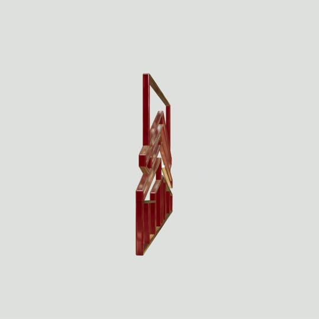
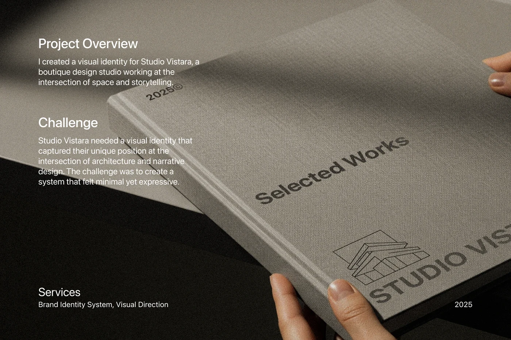
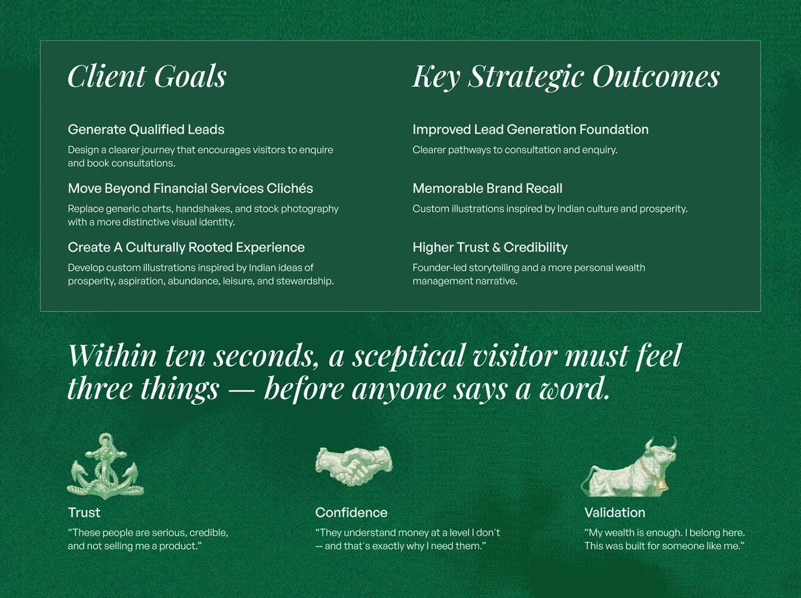
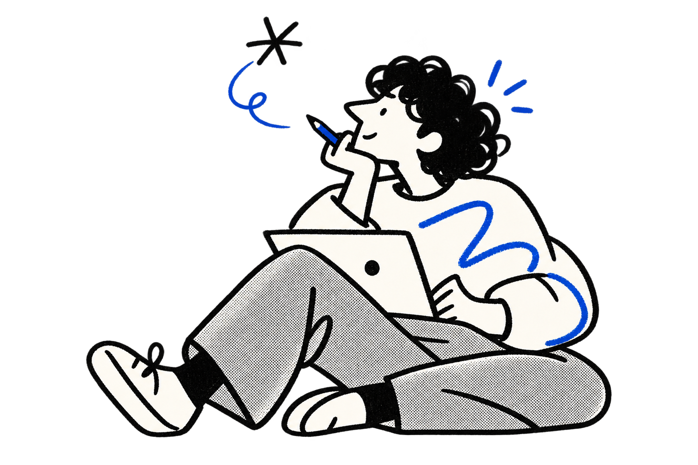

I took the long way
into design.
And I’m glad I did.
SS
ARCHIVE
ARCHIVE

“Me, somewhere between places.”
BENGALURU / 2026
01 / BEFORE DESIGN
I was supposed to build things. Just not these things.
I studied civil engineering before finding my way into graphic design.
What started as curiosity slowly became the thing I wanted to spend all my time doing.
TRANSITION ARCHIVE
B.E. CIVIL ENGINEERING → GRAPHIC DESIGN
02 / THE DETOURS
The detours turned out to be useful.
FILM — Story
02.02
BRAND — Consistency
02.03
WEB — Systems
02.04
B2B — Clarity
02.05
AI — Speed
02.06My varied career did not scatter my thinking. Each medium taught me something different.
03 / CORE POSITIONING
I like making complicated things feel simple — without making them boring.
Sometimes that means a brand system. Sometimes a landing page. Sometimes fifty pages of information. Sometimes one image.
04 / HOW I WORK
Strategy gives the work direction. Taste decides where it stops.
From understanding what we’re actually trying to say, to looking at it tomorrow and fixing the parts we hate.
05 / REFERENCE WORLD
Things that end up in the work, eventually.
Film. Advertising. Old magazines. Interfaces. Football. Architecture. Internet nonsense.
06 / BELIEFS
Things I’ve come to believe.
An idea is more useful than a style. Taste is mostly knowing what to remove.
07 / CURRENTLY
Graphic Design Lead at WizCommerce.
Designing for B2B wholesale commerce across web, campaigns, reports, motion and whatever else needs making.
08 / ENDING